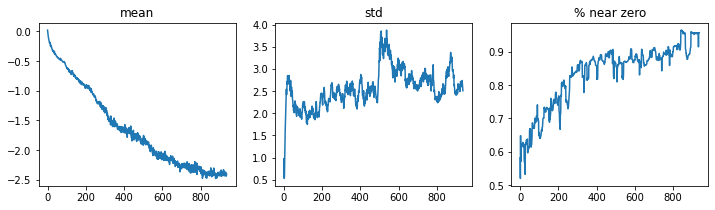
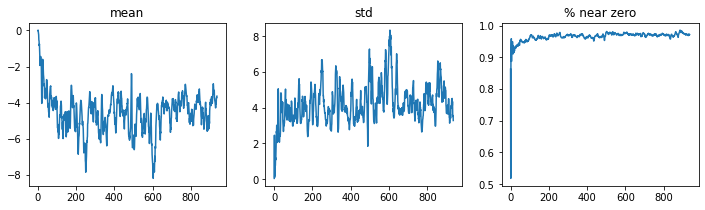
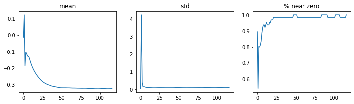
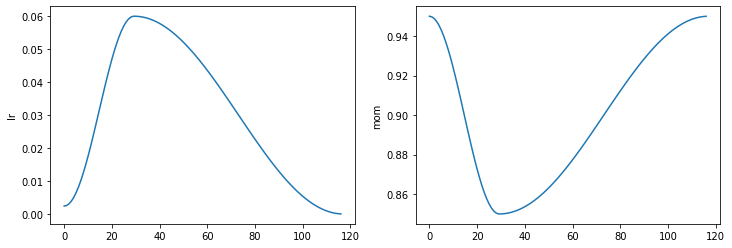
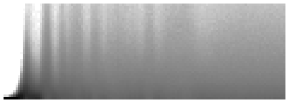
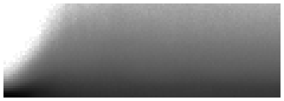

In this article we are going to look at building a convolutional neural network from scratch, using Pytorch as well as one-cycle training and batch normalisation.
deep-learning
Author
Pranath Fernando
Published
June 11, 2021
1 Introduction
In this article we are going to look at building a convolutional neural network from scratch, using Pytorch. We are also going to look at other techniques than help train models better, such as one-cycle training and batch normalisation.
Pytorch defines a convolutional layer using the method F.conv2d. This uses two rank 4 tensors.
Input tensor (minibatch, in_channels, iH, iW)
Weight tensor (out_channels, in_channels, kH, kW)
Where iH, iW, kH, kW are the image and kernal widths and heights respectively. Pytorch expects rank 4 tensors as it will process an entire mini-batch of images in one go, as well as applying multiple kernals in one go - which is more efficient to do on a GPU.
Lets try this out by creating a tensor of multiple kernals.
So we are not quite there, because currently our composite kernal is a rank 3 tensor, and it needs to be rank 4. So in this case we need to define an axis for the number of input channels which will be one (because our greyscale images have one channel). So we can insert an extra axis of 1 in the right place using the unsqueeze method.
This gives us a tensor of a batch of 64 images, with 4 kernals and 26x26 image (we lost one pixel from each side by convolutions of 28x28). Lets look at one of the images on one channel to see the applied convolution.
show_image(batch_features[0,0]);
So with pure convolutions we lost parts of the image, which become a bit smaller. We can get around this by using padding. We can also use stride to end up with a smaller sampled image.
3 Model 1 - A basic Convolutional Neural Network to predict 2 digits
We are going to build a simple model to predict 2 digits a 3 or 7, as a multi-class classification problem so we will expect probabilities for each image for the likelihood of it being either 3 or 7.
So we can use gradient descent to actually learn the best values for each of the kernals.
nn.Conv2d is a better method to use when creating a network as it automatically creates a weight matrix. Lets try a very simple model.
Note we didn’t need to specify an input size as we do with normal linear layers, as a convolution is applied to every pixel whatever the size of the image. The weights of a convolutional layer are to do with the number of input and output channels and the kernal size.
Putting our test batch through this, we can see it produces an output of 28x28 activations which is not ideal for classification. We could use a series of layers with strides, to reduce down the output activations.
Sequential (Input shape: 64)
============================================================================
Layer (type) Output Shape Param # Trainable
============================================================================
64 x 4 x 14 x 14
Conv2d 40 True
ReLU
____________________________________________________________________________
64 x 8 x 7 x 7
Conv2d 296 True
ReLU
____________________________________________________________________________
64 x 16 x 4 x 4
Conv2d 1168 True
ReLU
____________________________________________________________________________
64 x 32 x 2 x 2
Conv2d 4640 True
ReLU
____________________________________________________________________________
64 x 2 x 1 x 1
Conv2d 578 True
____________________________________________________________________________
[]
Flatten
____________________________________________________________________________
Total params: 6,722
Total trainable params: 6,722
Total non-trainable params: 0
Optimizer used: <function Adam at 0x7ff1128d58c0>
Loss function: <function cross_entropy at 0x7ff13e6b55f0>
Callbacks:
- TrainEvalCallback
- Recorder
- ProgressCallback
Note that the final conv layer output is 64x2x1x1 and flatten removes these unit axes, which is basically the squeeze function but as a network layer.
Let’s try training this model.
learn.fit_one_cycle(2, 0.01)
epoch
train_loss
valid_loss
accuracy
time
0
0.080185
0.035895
0.988714
00:13
1
0.024726
0.029886
0.990186
00:13
4 Convolutional arithmetic
So we can see in this example the input size is 64x1x28x28, and these axes are batch, channel, height, width. This is often represented in Pytorch as NCHW (where N is batch size).
When we use a stride-2 convolution, we often increase the number of features because we’re decreasing the number of activations in the activation map by a factor of 4; we don’t want to decrease the capacity of a layer by too much at a time.
We also have one bias weight for each channel. So in this example, our stide 2 convolutions halve the grid size - but we also double the number of filters at each layer. This means we get the same amount of computation done.
A receptive field is the area of an image involved in the calculation of a layer. As we go deeper through the layers, a larger area of the original image layers progressively contribute to smaller areas of later layers that have smaller grid sizes.
5 Model 2 - A Convolutional Neural Network to predict 10 digits
As our previous model did well on predicting 2 digits, we will now try to build a model that predicts all 10 digits, using the full MNIST dataset.
path = untar_data(URLs.MNIST)
The images are in 2 folders training and testing, so we can use the GrandparentSplitter but need to tell it explictly as by default it expects train and valid.
We will define a function to make it easy to define different dataloaders with different batch sizes.
So we will try and improve our previous model with one with more activations, and we will probably need more filters to handle more numbers, so we could double them for each layer.
But there is a potential problem, if we add more filters we are producing an image of a similar size to our input, which does not force the network to learn useful features. If we use a larger kernal in the first layer, such as 5x5 instead of 3x3, this will force the network to find more useful features from this more limited information.
/usr/local/lib/python3.7/dist-packages/fastai/callback/core.py:50: UserWarning: You are shadowing an attribute (modules) that exists in the learner. Use `self.learn.modules` to avoid this
warn(f"You are shadowing an attribute ({name}) that exists in the learner. Use `self.learn.{name}` to avoid this")
epoch
train_loss
valid_loss
accuracy
time
0
0.694318
0.672285
0.793600
01:06
So we trained for one epoch, but that did’nt do well. We can use callbacks to investigate why right after training. The ActivationStats callback use some useful plots, for example we can plot the mean and std dev of the activations of a layer you give the index for, along with the percentage of activations which are zero.
learn.activation_stats.plot_layer_stats(0)

So ideally we want our model to have a smooth mean and std dev during training. Activations near zero are not helpful, as it gives gradient descent little to work with. If we have little to zero activations in earlier layers, this gets even worse in later layers.
learn.activation_stats.plot_layer_stats(-2)

We could try to make training more stable by increasing the batch size with better info for gradients, but less often updated due to larger batch sizes.
Lets try larger batch size.
dls = get_dls(512)learn = fit()
/usr/local/lib/python3.7/dist-packages/fastai/callback/core.py:50: UserWarning: You are shadowing an attribute (modules) that exists in the learner. Use `self.learn.modules` to avoid this
warn(f"You are shadowing an attribute ({name}) that exists in the learner. Use `self.learn.{name}` to avoid this")
epoch
train_loss
valid_loss
accuracy
time
0
2.327641
2.302224
0.113500
00:56
learn.activation_stats.plot_layer_stats(-2)

This has’nt helped much with the activations, lets see what else we can do.
6 One cycle training
We have been training our model at the same learning rate, but it may be more helpful to vary the learning rate at different points - for example to have it higher when we are far in the loss landscape from the minimum, and have it lower when we are in the minimum area. In one cycle training, we start at a lower learning rate, building up gradually to a maximum, then gradually reducing the learning rate again.
/usr/local/lib/python3.7/dist-packages/fastai/callback/core.py:50: UserWarning: You are shadowing an attribute (modules) that exists in the learner. Use `self.learn.modules` to avoid this
warn(f"You are shadowing an attribute ({name}) that exists in the learner. Use `self.learn.{name}` to avoid this")
epoch
train_loss
valid_loss
accuracy
time
0
0.197716
0.083136
0.975800
00:55
learn.recorder.plot_sched()

Once cycle training also involves varying the momentum with the opposite pattern to the learning rate.
Looking at our layer stats again, we can see there is some improvement but still a large percentage of zero weights.
We can use the colour_dim module to show how the activations of a layer changes through the training accross time.
learn.activation_stats.color_dim(-2)

Here for example we can see on the far left mostly white is with most of the activations at zero, then as time passes from left to right, we can see an expontential build up of activations, which then collapses into zero activations (white bands). Eventually the bands go and you get more consistant activations for most of the model.
Ideally if we can avoid this crashing of activations this can result in better training.
7 Batch Normalisation
Batch norm is a method we can use to stablise training to try and avoid extreme rises and crashes in activations. Essentially batch norm normalises the activations of each layer using the mean and std dev of the activations. Batch norm also uses extra 2 learnable parameters per layer gamma and beta which are addative and multiplicative factors that can then scale the activations of a layer.
So each layer has its own normalisation and scaling with batchnorm layers. The normalisation is different during training vs validation: in training we use the mean and std dev of a batch to normalise, in validation we use the running mean and std dev calculated during training.
/usr/local/lib/python3.7/dist-packages/fastai/callback/core.py:50: UserWarning: You are shadowing an attribute (modules) that exists in the learner. Use `self.learn.modules` to avoid this
warn(f"You are shadowing an attribute ({name}) that exists in the learner. Use `self.learn.{name}` to avoid this")
epoch
train_loss
valid_loss
accuracy
time
0
0.129701
0.057382
0.985700
00:58
learn.activation_stats.color_dim(-4)

This has given us more gradual training without the crashes in activations. Now we are using batchnorm in our layers it should make it easier to learn at a higher learning rate.
learn = fit(5, lr=0.1)
/usr/local/lib/python3.7/dist-packages/fastai/callback/core.py:50: UserWarning: You are shadowing an attribute (modules) that exists in the learner. Use `self.learn.modules` to avoid this
warn(f"You are shadowing an attribute ({name}) that exists in the learner. Use `self.learn.{name}` to avoid this")
epoch
train_loss
valid_loss
accuracy
time
0
0.180499
0.142405
0.957800
00:58
1
0.078111
0.064472
0.979600
00:58
2
0.051010
0.052857
0.983600
00:58
3
0.031543
0.030566
0.990000
00:58
4
0.015607
0.024703
0.991900
00:58
8 Conclusion
In this article we look at how we can build a convolutional neural network using Pytorch, as well as useful extra techniques to help with model training such as one-cycle training and batch normalisation.